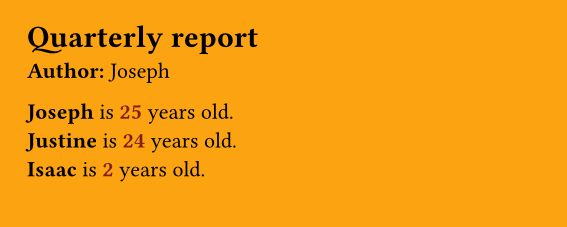
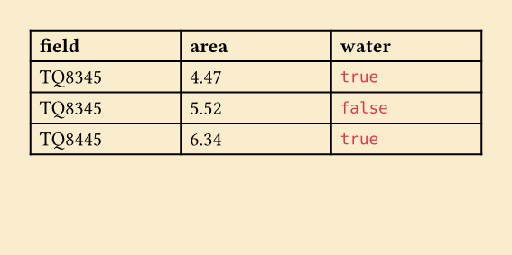

tynding is an R package that compiles Typst documents natively from R.
It exposes a small API for writing and compiling Typst files and lets you specify: - output format (pdf, png, svg, html) - font path to search for font files - pdf standard (for accessibility) - root path for more complex repos - any other kind of input, for advanced templating - basically zero performance overhead compared to the Typst command line!
Installation
install.packages("tynding", repos = c("https://y-sunflower.r-universe.dev"))[!NOTE]
tyndinguses Typst 0.15.0, and the plan is to keep it as close as possible to the latest upstream version.
Quick start
You just need to specify the path to your Typst document to get started!
library(tynding)
typst_compile("document.typ", output = "report.pdf")Features overview
- fonts: pass
font_pathto load font files from a directory before compiling.
library(tynding)
markup <- c(
'#set document(title: "custom font example")',
'#set text(font: "Ultra")',
'= hello world'
)
typ_file <- typst_write(markup)
pdf_file <- typst_compile(typ_file, font_path = "path/to/fonts")- pdf standard: pass
pdf_standardto request a Typst PDF profile such as"1.7","2.0","a-2b", or"ua-1".
markup <- c(
'#set document(title: "accessible PDF")',
"= hello world"
)
typ_file <- typst_write(markup)
pdf_file <- typst_compile(typ_file, pdf_standard = "ua-1")Unsupported or invalid standards raise an error. Since Typst 0.15.0, you can export to multiple PDF standards at once when they are compatible:
markup <- c(
'#set document(title: "accessible PDF")',
"= hello world"
)
typ_file <- typst_write(markup)
pdf_file <- typst_compile(typ_file, pdf_standard = c("a-2b", "ua-1"))- output format: pass
output_formatto export as"pdf","html","png", or"svg". If you omit it,tyndingwill infer the format from theoutputextension when possible and otherwise default to PDF.
library(tynding)
markup <- c(
'#set document(title: "hello from tynding")',
"= hello world",
"this document was compiled from R."
)
typ_file <- typst_write(markup)
png_file <- typst_compile(typ_file, output_format = "png")Multi-page png and svg exports will create multiple files. For this to behave the same as the Typst CLI, you’ll need to pass an output file name as a template string. For example:
library(tynding)
markup <- c(
"this document was compiled from R.",
"#pagebreak()"
)
typ_file <- typst_write(markup)
png_file <- typst_compile(typ_file, output_format = "png", output = "output-{p}.png")This will create output-1.png and output-2.png.
-
root: by default, the root path corresponds to the parent directory offile(detected automatically), but you can use therootargument to specify a different path, which is often useful in more complex projects where, for example, font files are located in a parent directory.
library(tynding)
typst_compile(
"reports/typst/document.typ",
root = "reports",
font_path = "reports/fonts"
)This will let you organize your project as follows, which isn’t possible by default:
reports/
├── typst/
│ └── document.typ
└── fonts/
├── MyFont.tff
└── MyFont-Bold.tffLearn more in the documentation website.
Advanced usage with inputs
You can send inputs using Typst’s sys.inputs handling. Basically, you do your thing with R, and then send whatever you want to Typst! For example:
library(tynding)
typst_compile(
"file.typ",
title = "Quarterly report",
# all additional arguments... can be anything you want!
author = "Joseph",
persons = list(
list(name = "Joseph", age = 25),
list(name = "Justine", age = 24),
list(name = "Isaac", age = 2)
)
)Then your file.typ looks like this:
#set page(width: 10cm, height: 4cm, fill: rgb("#fca311"))
#let title = sys.inputs.at("title")
#let author = sys.inputs.at("author")
#let persons = json(bytes(sys.inputs.at("persons")))
= #title
*Author:* #author
#for person in persons [
#strong(person.name) is #text(fill: red.darken(50%), weight: "bold", [#person.age]) years old. \
]
All extra arguments are accepted. Scalar values are passed as-is; other values are JSON-encoded (using jsonlite::toJSON()).
This means that we can, for instance, send a data frame from R to create a Typst table.
df <- data.frame(
field = c("TQ8345", "TQ8345", "TQ8445"),
treated_area = c(4.47, 5.52, 6.34),
water = c(TRUE, FALSE, TRUE)
)
typst_compile(
"file.typ",
data = df
)The Typst file looks like:
#set page(width: 10cm, height: 15cm, fill: rgb("#faedcd"))
#let data = json(sys.inputs.at("data"))
#let keys = data.at(0).keys()
#let cols = (1fr,) + range(1, keys.len()).map(_ => 1fr)
#table(
columns: cols,
table.header(..keys.map(key=>[#text(weight: "bold", key)])),
..data
.map(row => keys.map(key => [#row.at(key, default: "n/a")]))
.flatten(),
)
Error and warning messages
tynding gives you the same great error and warning messages that Typst gives you, which makes things easier to debug.
- Errors
For example, this will raise an error since hello() is undefined:
When you try to compile it:
library(tynding)
typst_compile("document.typ")- Warnings
The same thing happens with warnings: Typst warnings raise R warnings.
When you try to compile:
library(tynding)
typst_compile("document.typ")warning: unknown font family: invalid font
┌─ document.typ:1:17
│
1 │ #set text(font: "invalid font")
│ ^^^^^^^^^^^^^^Related project
typr is a package with a very similar goal, but it works quite differently under the hood. typr compiles your document using the Typst/Quarto CLI, while tynding uses the Typst compiler itself via the Typst Rust library.
Both have their pros and cons, but tynding is designed to be faster (no external command like system2() or processx::run()), more portable (don’t worry about installing Typst separately and adding it to the PATH), and more lightweight (jsonlite as a single R dependency and no Rust runtime dependency).
tynding will also do other useful stuff such as R to Typst conversion, automatic encoding of objects that need it, and more!